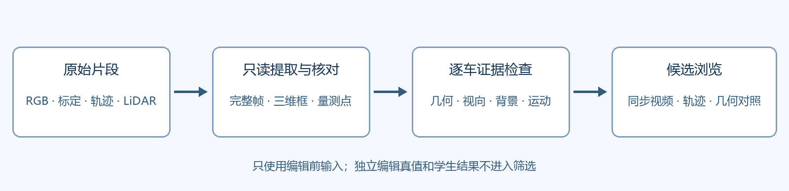

车辆候选时序与几何核查
2026-11-01 · 独立说明，未加入共享平台导航
候选页黑屏来自标注画布的不透明背景遮住原图，已改为透明；缺图和加载失败现在有明确提示。原场景号和 aN 车辆代号保持稳定，完整原始 ID 可展开核对。
交互候选页、原始浏览视频与量测 NPZ 随本地交付提供；仓库保留源码、数值、定义与核验记录。

补齐可检查的实际输入
15 场保留全部 1,228 条车辆轨迹与原 45 条准备队列。当前完成 15/15 场完整原始片段，共 2,975 帧。原始 RGB 与三维框视频分别保存，可逐帧查看所选车辆、轨迹和 LiDAR；没有用单帧或抽样帧冒充完整视频。
浏览副本为 960×640：逐帧 JPEG 与 H.264 视频都经过缩放和有损编码。完整指原始时间序列的全部帧，不表示逐像素无损；这些浏览副本不用于正式图像指标或资格阈值计算。选车会先定位到该车可见处，完整片段和时间轴仍保留；“车辆出现处”可快速返回。
LiDAR 来自五个传感器、两次回波，保留 TOP 的逐像素运动补偿和 NLZ 过滤。每辆车的框内原始量测行以 NPZ 保存，浏览使用 6 厘米网格与 12,000 点显示上限；显示抽样不改变实测分母。框内点可能含路面、遮挡物或其他物体，不能当成已分割好的车体表面。投到相机上的颜色只作查看，灰色表示没有前向颜色对应，颜色不作为可见性证据。
逐帧模式从完整 NPZ 的各个原始帧独立抽样，使用 6 厘米网格、每帧最多 512 点，没有将全片去重后的点按帧反筛。真实零点、没有车辆标注、显示文件未提供分别显示；轨迹使用完整逐帧原始标注，缺测段断线，不补出虚构位置。
实际解码 497,156,385 行传感器回波，其中 44,046,945 行进入车辆三维框内量测集合；同一点可进入多个框，连帧和多回波不当作独立物理点。1,198 条轨迹有实测量，另 30 条全片框内零量测原样保留。45 条准备候选全片及建议窗口内都有量测，这只证明存在支持，不能证明完整表面或编辑资格。
三维框使用原始框、标定和提供的图像位姿投影；没有做逐行滚动快门及车辆曝光时刻运动补偿，因此用于定位与轨迹核对，不作像素精确几何真值。已修正视野外框在大畸变处折回画面的投影错误。
训练集 scene-212 使用远端 Linux 解码缓存，本机独立重解三帧的 32,997 行测点；两运行时的最大坐标分量差为 0.976 毫米，严格 0.02 毫米一致性检查未通过，原阈值与数据均保留。超过严格阈值的 584 行均来自 TOP，与约 7 公里世界坐标的 float32 消去误差相符；独立 float64 控制最大误差约 1.13 毫米。传感器计数、源行身份逐项一致，不声称其余坐标位级相等。其余 14 场的三帧独立控制均通过同一严格检查，见完整独立审查。212 此项不叫数值 parity 通过，也不据此判车辆几何失败。各帧刚体汇聚尚未补偿扫描期间车辆自身的运动。
三场已有模型读取了静态、动态两个分支的全部 5,499,413 个原始高斯，给 9 条既有场景准备候选制作三锚几何对照。对照先按当前合法姿态转入车辆局部坐标，再在同一米制坐标中显示 LiDAR 与高斯中心。逐车显示及最近距离的数值域限于有效 opacity≥0.01、中心位于三维框外扩 0.5 米内；这是诊断裁剪，框外椭球也可能投影入车身。它包括可能错留静态分支的车辆行；框内邻近行也可能属于背景或别的物体。中心最近距离不是椭球覆盖、深度一致率或可见表面完整度，不能代替 R4 的 f_geom。
27 个预定锚点中，26 个得到真实对照；训练集 scene-537 / a105 的 raw149 没有原始轨迹姿态，保留未测记录，没有插值造图。它的 raw173 与 raw197 对照仍可查看。
这三场共登记 309 条车辆轨迹，本轮中心裁剪对照只覆盖其中 9 条准备车。第四个已有场景 scene-008 的 60 条轨迹、完整视频与 LiDAR 仍保留，五个既有资产不等于无模型；其恢复和坐标转换尚未纳入本轮新高斯对照。
二次检查怎样隔离无关坏例
45 条是准备顺序，不是 45 条合格车。当前没有标记任何正式 P=1 或 P=0：1,228 条及其逐操作资格仍为未知。已核实的观测缺口、准备缺口与未完成测量分别记录；这些状态不能冒充归属学习成功或失败。
| 检查 | 本轮实际完成 | 仍需完成的正式准入测量 |
|---|
| 几何 | 真实框内 LiDAR、多帧局部对齐；已有三场完整双分支高斯对照；掩码库存单列 | 合法正像素车身掩码、有效深度附近的完整 G 累计贡献覆盖、原始 none 误差 |
| 视向 | 逐帧相机/对象方位代理，区分全片、建议 49 帧与当前模型窗口 | 操作将显露的真实表面、颜色和当前 G 的投影视向支持 |
| 背景 | 保持未知；不把框内车后区域自动当作已有道路 | 对应固定世界地点的历史真实显露射线与有效深度，按删除/移动分别登记 |
| 运动 | 时间、有限姿态/尺寸、帧缺口、坐标映射和原生窗口检查 | 逐车原生输入恢复、时间域和世界↔模型映射的完整准入 |
45 条中，16 条只有 1 个、25 条只有 2 个前向粗方位扇区；43 条在 +30° 偏航的粗扇区诊断中出现源视向缺口。这是准备风险提示，不是表面完整度或旋转不可行的证明。当前 49 帧源窗口也不等于已经核实的 G 训练分区。
全体中 732 条没有前向投影，其中 563 条在其他相机有投影，不能隐藏它们或说没有观测；其余 169 条只表示导出的相机投影标注均无支持。另有 2 条轨迹存在帧缺口、7 条在前向出现时框内 LiDAR 标注计数始终为零，均保留在登记表中。
45 条中 6 条有既有掩码库存，其中 1 条（训练集 scene-008 / a5）掩码像素中位数为 0，不能把“49 个掩码文件”说成 49 帧有效车身。正像素帧数未存于现有汇总，仍保持未知。
45 条的固定首/中/末锚点检查发现 3 条缺少首锚原始标注姿态：训练集 scene-537 / a105 的 raw149、验证集 scene-004 / a14 的 raw149、scene-081 / a49 的 raw50。它们对应窗口内原始标注分别为 38/49、47/49、38/49 帧；没有在看过结果后另挑锚点，也不把缺测填成零误差。
badcase 表的 13 类按原因分开：归属、漏召回、弱可见来源和跨时序绑定进入决策证据检查；几何/尺度、颜色、新姿态缺面和未观测背景独立记录能力边界；双域支撑、关联效果、环境与合成补偿保留机制待查；展示接线归工程问题。本轮不从历史编辑残影或独立删车真值反推入选资格，也没有新增几何/颜色修复训练。
检查定义与 badcase 对应 · 全部逐车、逐操作证据 · 45 条准备候选二筛表
全片分母与实际量测
| 场景 | 原始帧 | 车辆轨迹 | 完整媒体帧 | 框内实测行 |
|---|
| Waymo · scene-008（训练集） | 199 | 60 | 199 | 3692505 |
| Waymo · scene-212（训练集） | 199 | 75 | 199 | 2614539 |
| Waymo · scene-537（训练集） | 198 | 164 | 198 | 3509193 |
| Waymo · scene-564（训练集） | 198 | 70 | 198 | 1551495 |
| Waymo · scene-004（验证集） | 198 | 22 | 198 | 1260249 |
| Waymo · scene-020（验证集） | 197 | 91 | 197 | 5634814 |
| Waymo · scene-029（验证集） | 198 | 86 | 198 | 2550660 |
| Waymo · scene-035（验证集） | 198 | 83 | 198 | 2231948 |
| Waymo · scene-065（验证集） | 199 | 29 | 199 | 3295162 |
| Waymo · scene-067（验证集） | 198 | 48 | 198 | 1064168 |
| Waymo · scene-079（验证集） | 197 | 181 | 197 | 6179278 |
| Waymo · scene-081（验证集） | 199 | 54 | 199 | 825466 |
| Waymo · scene-086（验证集） | 199 | 87 | 199 | 3310682 |
| Waymo · scene-113（验证集） | 199 | 11 | 199 | 1154079 |
| Waymo · scene-140（验证集） | 199 | 167 | 199 | 5172707 |
轨迹数是登记分母，不是独立物理车辆或独立统计样本数。连帧和像素也不作为独立样本。本轮未改变旧 V43 有效/无效输出、候选合同或模型参数。
核验与边界
本轮训练更新与 GPU 查询均为 0。页面数据通过本地脚本直接载入，支持 file://，不依赖 fetch 服务。图像、媒体帧数、车辆映射、同帧定位及脚本交互按交付检查记录验收；浏览器交互受工具策略限制，未冒称完成真实浏览器测试。共享共同入口保持原有场景导航，不加入此报告、实验状态或研究计划。
来源：修订 R4 第 3 节；用户提供的 editor_badcase_analysis.xlsx 的 V43!B2:H14（只读提取见 来源记录）；原始 Waymo 数据和已有完整高斯导出。数据字段及坐标约定对照 Waymo 官方数据定义，量测转换对照 官方 range-image 转换，原始框对照 官方 box 工具。附件内容用于核对设计与历史证据，不作为新增执行授权。
task: WS-V43-ACTOR-DIAGNOSTICS-20261101；human_verdict=null。源码、输入裁剪收据、显示与实测分母、已知投影近似均随交付保留。